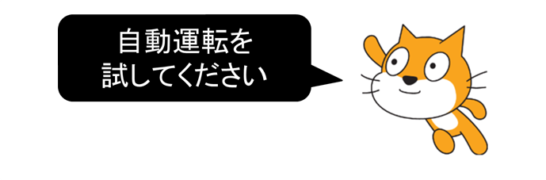

第6回オンライン開催報告（2021-05-09）
本日のScratchテーマは「スクラッチアートと自動運転」を作ってみるよ
ニンジャ３家族と作品制作するメンター３名が参加してくれました。Scratchじゃない方の「スクラッチアート」を使っためいろを自動脱出する自動運転アルゴリズムをみんなで体験しました。最終成果物は伝えずに、最初はたくさんの同じプログラムを組んで苦労しておき、次に自動化するためのアルゴリズムでプログラムで組んでみて、「おおー、こんな簡単にできるんだ」という体験をしました。では、その模様を以下にお伝えします。
本日の流れ
- 1. スクラッチアートを描く
- 2. 自動運転（手動でプログラミング）
- 3. 自動運転（自動化アルゴリズム）
前半のワークショップ

スクラッチアートとは？
クレヨンを使って、カラフルな模様を書いたその上から真っ黒に塗りつぶして、つまようじ等をつかってカリカリと模様を描くやつですね。これをScratchで描く。
（１）ステージ
ステージ（背景）に、筆の太さ[100]で、様々な色使いで好きな模様を描きます。デタラメでもいいし、水玉とか、何でもいいです。

（２）スプライト（めいろを描く）
最初にある「ネコ」のスプライトは消して、新しく自分で描くスプライトを追加します。
先ほどの筆の太さ[100]のまま画面全体を黒色で埋めてください。次に、消しゴムの太さ[100]で迷路を描きます。迷路は太めの方が良いです。
確認
もしも、迷路の枠（スプライト）とステージ（背景）がズレてしまう場合は、スプライトのX座標、Y座標がステージの真ん中にくるように設定しよう。
ワークショップの時間
メンター「それでは作業を始めてください。完成したら作品を見せてくださいね。操作が分からない場合はメンターに聞いてください。」
（３）スプライト（手動でプログラミングする）
迷路のスタートからゴールまで移動するプログラムを作ります。空からながめるのでスプライトは「人の、上から見たやつ」がいいですね。
迷路の太さに合わせたいので、スプライトの大きさは[30]に設定します。
スタート地点を決めて、旗を押したら「人」が進み、曲がって、進み、曲がって、を繰り返してゴールを目指しましょう。
ワークショップの時間
メンター「それでは作業を始めてください。完成したら、自動運転するアニメーションを発表してください。」
後半のワークショップ
メンター「次に、新しい迷路を描いて、もう一度、自動運転するアニメーションを作って。と言ったら大変かなぁ。では、ＡＩみたいに本当の自動化プログラミングをやってみようか。」
（４）センサーを作る
スプライトの前方向に「赤色のセンサー（左）」と「青色のセンサー（右）」を描きます。枠線は無しです。
もし、赤色のセンサーが黒色の壁に触れたら、人の向きを変えたいです。右回転と左回転のどっちを選べばいいかな。
もし、青色のセンサーが黒色の壁に触れたら、今度はどっちを選べばいいかな。
（５）センサーのプログラムを作る
旗が押されたら、スプライト「人」をスタート地点に移動して、大きさを[30]にして、ずっと[4]歩動かします。
もし「赤色」が「黒色」に触れたら向きを変えます。同じように「青色」のプログラムも考えてみてください。
ヒント
●もしかすると「人」が「壁」に重なっているかもしれないのでｘｘｘｘします。
●もしかすると「いつも同じ角度」なので、ずうっと右にも左にも進めない場合があるかもしれないのでｘｘｘｘします。
ワークショップの時間
メンター「それでは作業を始めてください。完成したら、自分で進む方向を考えるアニメーションを発表してください。」
メンター「早く終わった人は、自分でアイディアを考えて改造してみてください。」

メンターの作品例
おまけ（どんな動きになるかな？）
自分自身のクローンを作ってみようか。